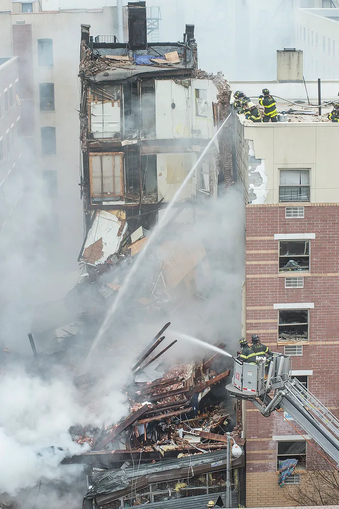

대구 상가 천장 붕괴…노인 대상 판매행사 중 38명 부상
지난 10일 오전 10시 16분쯤 대구 북구 관음동의 한 4층짜리 상가건물 2층에서 천장 마감재가 갑자기 내려앉는 사고가 발생했다. 사고 당시 2층 공간에서는 한 업체가 노인들을 대상으로 생활용품 등을 판매하는 홍보 행사를 진행하고 있었으며, 많은 인파가 몰려 있던 터라 자칫 대형 인명피해로 이어질 뻔한 상황이었다. 신고를 받은 소방당국은 구조 인력과 장비를 긴급히 투입해 현장을 수습했고, 인근 병원에도 비상 연락이 이뤄지면서 부상자 이송이 신속하게 진행됐다.
이 사고로 모두 38명이 부상을 입은 것으로 집계됐다. 이 가운데 9명은 병원으로 옮겨져 치료를 받았고, 나머지는 현장에서 응급처치를 받거나 경미한 상처에 그쳤다. 소방당국은 중상자는 없는 것으로 파악하고 있다고 밝혔다. 사고 당시 현장에 있던 66명은 천장이 무너지는 소리를 듣고 스스로 대피에 나서면서 추가 피해를 줄일 수 있었던 것으로 전해졌다. 한꺼번에 수십 명이 몰려있던 좁은 실내 공간에서 벌어진 사고였던 만큼, 대피 과정에서의 혼란을 우려하는 목소리도 있었지만 비교적 질서있게 빠져나오면서 큰 혼란 없이 상황이 정리됐다는 전언이다.
사고가 발생한 건물은 1994년 준공돼 30년이 넘은 노후 건물로 확인됐다. 천장이 붕괴된 2층 공간은 과거 당구장으로 쓰이다 비어 있던 곳으로, 이번 사고를 낸 업체가 한 달가량 임대해 판매 행사장으로 활용하고 있었다. 오랫동안 영업이 멈춰 있던 유휴 공간을 단기로 빌려 쓰는 경우 건물주와 임차인 양측 모두 구조 안전점검에 소극적일 수 있다는 점에서, 노후 건물의 공간을 임시로 활용하는 상업 행사 전반에 대한 우려가 다시 제기되고 있다.
경찰과 국립과학수사연구원은 사고 다음 날인 11일 오전 9시부터 현장에서 합동감식을 벌여 붕괴 원인을 정밀하게 조사하고 있다. 조사의 초점은 천장 마감재가 어떤 이유로 갑자기 떨어져 내렸는지, 건물의 하중 관리나 과거 리모델링 과정에서 안전조치가 제대로 지켜졌는지 등에 맞춰질 것으로 보인다. 특히 당구장에서 판매장으로 용도가 바뀌는 과정에서 구조 변경이나 추가 설비 설치가 있었는지도 들여다볼 대목으로 꼽힌다. 지자체 역시 건물 전반에 대한 구조 안전진단을 별도로 진행할 가능성이 있다는 관측이 나온다.

이번 사고는 전국 곳곳의 노후 상가건물에서 벌어지는 임시 판매 행사의 안전관리 사각지대를 다시 한번 드러냈다는 평가를 받는다. 특히 노인을 주요 고객층으로 삼는 홍보 판매 행사는 좁은 공간에 다수의 인원을 장시간 모아두는 방식으로 운영되는 경우가 많아, 건물의 노후도나 하중 한계를 고려하지 않은 채 열릴 경우 위험성이 커질 수 있다는 지적이 제기된다. 이런 행사는 대개 짧은 기간 공간을 빌려 치러지다 보니 정식 영업시설과 달리 소방·건축 당국의 사전 점검 대상에서 빠지기 쉽다는 구조적 한계도 함께 거론된다.
지역 주민들 사이에서는 해당 상가건물의 안전 관리 실태에 대한 불안감도 커지고 있다. 건물 인근에서 비슷한 형태로 운영 중인 다른 노후 상가에도 같은 위험이 있을 수 있다는 우려가 번지면서, 구청 차원의 전수점검을 요구하는 목소리도 나온다. 지자체와 소방당국은 합동감식 결과가 나오는 대로 건물주와 행사 주최 업체 등에 대한 책임 소재를 가릴 방침이다.
아울러 비슷한 방식으로 운영되는 지역 내 다른 노후 상가건물들에 대해서도 안전점검을 확대해야 한다는 목소리가 나오고 있어, 이번 사고를 계기로 유휴 상업공간을 활용한 행사에 대한 제도적 관리 기준이 마련될지 주목된다. 당장은 다친 이들의 치료와 회복이 우선이지만, 노후 건물에서 반복될 수 있는 비슷한 사고를 막기 위한 제도 보완 논의로 이어질 가능성도 적지 않다.